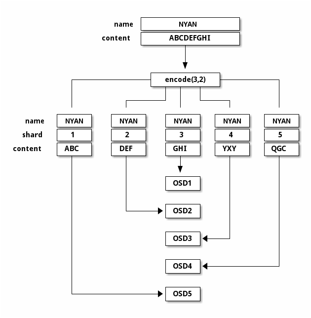

Notice
This document is for a development version of Ceph.
纠删码
By default, Ceph pools are created with the type “replicated”. In replicated-type pools, every object is copied to multiple disks. This multiple copying is the method of data protection known as “replication”.
By contrast, erasure-coded pools use a method of data protection that is different from replication. In erasure coding, data is broken into fragments of two kinds: data blocks and parity blocks. If a drive fails or becomes corrupted, the parity blocks are used to rebuild the data. At scale, erasure coding saves space relative to replication.
In this documentation, data blocks are referred to as “data chunks” and parity blocks are referred to as “coding chunks”.
Erasure codes are also called “forward error correction codes”. The first forward error correction code was developed in 1950 by Richard Hamming at Bell Laboratories.
创建纠删码存储池样板
The simplest erasure coded pool is equivalent to RAID5 and requires at least three hosts:
ceph osd pool create ecpool erasure
pool 'ecpool' created
echo ABCDEFGHI | rados --pool ecpool put NYAN -
rados --pool ecpool get NYAN -
ABCDEFGHI
纠删码配置
默认的纠删码配置可容忍连续两个 OSD 的损失，而不丢失数据。 这个纠删码配置相当于副本数为三的多副本存储池，但存储需求却不同： 它只需 2TB 的空间即可存储 1TB 数据，而不是 3TB 空间存储 1TB 数据。默认配置可这样查看：
ceph osd erasure-code-profile get default
k=2
m=2
plugin=jerasure
crush-failure-domain=host
technique=reed_sol_van
Note
The profile just displayed is for the default erasure-coded pool, not the simplest erasure-coded pool. These two pools are not the same:
The default erasure-coded pool has two data chunks (K) and two coding chunks (M). The profile of the default erasure-coded pool is “k=2 m=2”.
The simplest erasure-coded pool has two data chunks (K) and one coding chunk (M). The profile of the simplest erasure-coded pool is “k=2 m=1”.
确定合理的配置很重要，因为存储池创建后就不能再修改了。 If you find that you need an erasure-coded pool with a profile different than the one you have created, you must create a new pool with a different (and presumably more carefully considered) profile. When the new pool is created, all objects from the wrongly configured pool must be moved to the newly created pool. There is no way to alter the profile of a pool after the pool has been created.
配置文件里最重要的参数是 K 、 M 和 crush-failure-domain ，因为它们决定了存储的开销和数据的持久性。 例如，假设期望的系统架构必须能承受两个故障机架和 67% 的开销， 可以用下列配置文件：
ceph osd erasure-code-profile set myprofile \
k=3 \
m=2 \
crush-failure-domain=rack
ceph osd pool create ecpool erasure myprofile
echo ABCDEFGHI | rados --pool ecpool put NYAN -
rados --pool ecpool get NYAN -
ABCDEFGHI
对象 NYAN 将被分割成三块（ K=3 ）、 并额外创建两个 校验块（ M=2 ）。 M 值决定了在不丢数据的前提下可以同时失去多少 OSD 。 crush-failure-domain=rack 能使创建的 CRUSH 规则可确保两个校验块不会存储在同一机架上。

详情可见 纠删码配置 文档。
在纠删码存储池上启用重写功能
默认情况下，纠删码存储池只适用于像 RGW 这样进行完整对象写入和追加的场景。
从 Luminous 起，在纠删码存储池里进行部分写入的功能可以在存储池配置里启用，这样 RBD 和 CephFS 就可以使用纠删码存储池存储数据了：
ceph osd pool set ec_pool allow_ec_overwrites true
只有当存储池座落于 bluestore 格式的 OSD 上时才能启用此功能，因为 bluestore 的校验和功能在深度洗刷时能探测到位翻转或者其它的损坏。除了不安全外，在 filestore 上使用 EC 重写的性能也比 bluestore 上差得多。
纠删码存储池不支持 omap ，所以用于 RBD 和 CephFS 时你必须让它们把数据存到 EC 存储池里、而元数据存到副本存储池里。对 RBD 而言，这意味着在创建映像时要用纠删码存储池作 --data-pool （数据存储池）的参数：
rbd create --size 1G --data-pool ec_pool replicated_pool/image_name
对 CephFS 而言，可在文件系统创建期间、或通过 文件布局 把一个纠删码存储池设置为默认的数据存储池。
Erasure Coding Optimizations
Since Tentacle, an erasure-coded pool may have optimizations enabled with a per-pool setting. This improves performance for smaller I/Os and eliminates padding, which can significantly reduce space amplification and wasted capacity:
ceph osd pool set ec_pool allow_ec_optimizations true
The optimizations will make an erasure code pool more suitable for use with RBD or CephFS. For RGW workloads that have large objects that are read and written sequentially there will be little benefit from these optimizations; but RGW workloads with lots of very small objects or small random access reads will see performance and capacity benefits.
This flag may be enabled for existing pools, and can be configured
to default for new pools using the central configuration option
osd_pool_default_flag_ec_optimizations. Once the flag has been
enabled for a pool it cannot be disabled because it changes how new data is
stored.
The flag cannot be set unless all the Monitors and OSDs have been upgraded to Tentacle or later. Optimizations can be enabled and used without upgrading gateways and clients.
Optimizations are currently only supported with the Jerasure and ISA-L plugins
when using the reed_sol_van technique (these are the old and current
defaults and are the most widely used plugins and technique). Attempting to
set the flag for a pool using an unsupported combination of plugin and
technique is blocked with an error message.
The default stripe unit is 4K which works well for standard EC pools.
For the majority of I/O workloads it is recommended to increase the stripe
unit to at least 16K when using optimizations. Performance testing
shows that 16K is the best choice for general purpose I/O workloads. Increasing
this value will significantly improve small read performance but will slightly
reduce the performance of small sequential writes. For I/O workloads that are
predominately reads, larger values up to 256KB will further improve read
performance but will further reduce the performance of small sequential writes.
Values larger than 256KB are unlikely to have any performance benefit. The
stripe unit is a pool create-time option that can be set in the erasure code
profile or by setting the central configuration option
osd_pool_erasure_code_stripe_unit. The stripe unit cannot be changed
after the pool has been created, so if enabling optimizations for an existing
pool you will not get the full benefit of the optimizations.
Without optimizations enabled, the choice of k+m in the erasure code profile
affects performance. The higher the values of k and m the lower the
performance will be. With optimizations enabled there is only a very slight
reduction in performance as k increases so this makes using a higher value
of k more viable. Increasing m still impacts write performance,
especially for small writes, so for block and file workloads a value of m
no larger than 3 is recommended.
Erasure-coded pool overhead
The overhead factor (space amplification) of an erasure-coded pool is (k+m) / k. For a 4,2 profile, the overhead is thus 1.5, which means that 1.5 GiB of underlying storage are used to store 1 GiB of user data. Contrast with default three-way replication, with which the overhead factor is 3.0. Do not mistake erasure coding for a free lunch: there is a significant performance tradeoff, especially when using HDDs and when performing cluster recovery or backfill.
Below is a table showing the overhead factors for various values of k and m. As k increases above 4, the incremental capacity overhead gain quickly experiences diminishing returns but the performance impact grows proportionally. We recommend that you do not choose a profile with k > 4 or m > 2 unless and until you fully understand the ramifications, including the number of failure domains your cluster topology presents. If you choose m=1, expect data unavailability during maintenance and data loss when component failures overlap. Profiles with m=1 are thus strongly discouraged for production data.
Deployments that must remain active and avoid data loss when larger numbers of overlapping component failure must be survived may favor a value of m > 2. Note that such profiles result in lower space efficiency and lessened performance, especially during backfill and recovery.
If you are certain that you wish to use erasure coding for one or more pools but are not certain which profile to use, select k=4 and m=2. You will realize double the usable space compared to replication with size=3 with relatively tolerable write and recovery performance impact.
Note
Most erasure-coded pool deployments require at least k+m CRUSH failure domains, which in most cases means rack`s or `hosts. There are operational advantages to planning EC profiles and cluster topology so that there are at least k+m+1 failure domains. In most cases a value of k > 8 is discouragd.
Note
CephFS and RGW deployments with a significant proportion of very small user files/objects may wish to plan carefully as erasure-coded data pools can result in considerable additional space ampliificaton. Both CephFS and RGW support multiple data pools with different media, performance, and data protection strategies, which can enable efficient and effective deployments. An RGW deployment might for example provision a modest complement of TLC SSDs used by replicated index and default bucket data pools, and a larger complement of erasure-coded QLC SSDs or HDDs to which larger and colder objects are directed via storage class, placement target, or Lua scripting.
m=1 |
m=2 |
m=3 |
m=4 |
m=5 |
m=6 |
m=7 |
m=8 |
m=9 |
m=10 |
m=11 |
|
|---|---|---|---|---|---|---|---|---|---|---|---|
k=1 |
2.00 |
3.00 |
4.00 |
5.00 |
6.00 |
7.00 |
8.00 |
9.00 |
10.00 |
11.00 |
12.00 |
k=2 |
1.50 |
2.00 |
2.50 |
3.00 |
3.50 |
4.00 |
4.50 |
5.00 |
5.50 |
6.00 |
6.50 |
k=3 |
1.33 |
1.67 |
2.00 |
2.33 |
2.67 |
3.00 |
3.33 |
3.67 |
4.00 |
4.33 |
4.67 |
k=4 |
1.25 |
1.50 |
1.75 |
2.00 |
2.25 |
2.50 |
2.75 |
3.00 |
3.25 |
3.50 |
3.75 |
k=5 |
1.20 |
1.40 |
1.60 |
1.80 |
2.00 |
2.20 |
2.40 |
2.60 |
2.80 |
3.00 |
3.20 |
k=6 |
1.16 |
1.33 |
1.50 |
1.66 |
1.83 |
2.00 |
2.17 |
2.33 |
2.50 |
2.66 |
2.83 |
k=7 |
1.14 |
1.29 |
1.43 |
1.58 |
1.71 |
1.86 |
2.00 |
2.14 |
2.29 |
2.43 |
2.58 |
k=8 |
1.13 |
1.25 |
1.38 |
1.50 |
1.63 |
1.75 |
1.88 |
2.00 |
2.13 |
2.25 |
2.38 |
k=9 |
1.11 |
1.22 |
1.33 |
1.44 |
1.56 |
1.67 |
1.78 |
1.88 |
2.00 |
2.11 |
2.22 |
k=10 |
1.10 |
1.20 |
1.30 |
1.40 |
1.50 |
1.60 |
1.70 |
1.80 |
1.90 |
2.00 |
2.10 |
k=11 |
1.09 |
1.18 |
1.27 |
1.36 |
1.45 |
1.54 |
1.63 |
1.72 |
1.82 |
1.91 |
2.00 |
k=12 |
1.08 |
1.17 |
1.25 |
1.33 |
1.42 |
1.50 |
1.58 |
1.67 |
1.75 |
1.83 |
1.92 |
k=20 |
1.05 |
1.10 |
1.15 |
1.20 |
1.25 |
1.30 |
1.35 |
1.40 |
1.45 |
1.50 |
1.55 |
纠删码存储池与缓存分级
Note
分级缓存在 Reef 版已经废弃。我们强烈建议别再部署新的分级缓存，并把现有部署删掉。
纠删码存储池与副本存储池相比需要的计算资源更多，而且还缺少一些功能，像 omap 。要消除这些局限性，可以在纠删码存储池前加一个缓存层。
For example, if the pool hot-storage is made of fast storage, the following commands will place the hot-storage pool as a tier of ecpool in writeback mode:
ceph osd tier add ecpool hot-storage
ceph osd tier cache-mode hot-storage writeback
ceph osd tier set-overlay ecpool hot-storage
如此一来，到 ecpool 的每个写和读实际上用的是 hot-storage ，而且还受益于其灵活性和速度。
更详细的文档请参阅分级缓存。 注意：缓存分级功能已经废弃，以后的版本会完全删除。
纠删码存储池的恢复
If an erasure-coded pool loses any data shards, it must recover them from others. This recovery involves reading from the remaining shards, reconstructing the data, and writing new shards.
In Octopus and later releases, erasure-coded pools can recover as long as there are at least K shards available. (With fewer than K shards, you have actually lost data!)
Prior to Octopus, erasure-coded pools required that at least min_size shards be
available, even if min_size was greater than K. This was a conservative
decision made out of an abundance of caution when designing the new pool
mode. As a result, however, pools with lost OSDs but without complete data loss were
unable to recover and go active without manual intervention to temporarily change
the min_size setting.
We recommend that min_size be K+1 or greater to prevent loss of writes and
loss of data.
术语
- chunk
When the encoding function is called, it returns chunks of the same size as each other. There are two kinds of chunks: (1) data chunks, which can be concatenated to reconstruct the original object, and (2) coding chunks, which can be used to rebuild a lost chunk.
- K
The number of data chunks into which an object is divided. For example, if K = 2, then a 10KB object is divided into two objects of 5KB each.
- M
The number of coding chunks computed by the encoding function. M is equal to the number of OSDs that can be missing from the cluster without the cluster suffering data loss. For example, if there are two coding chunks, then two OSDs can be missing without data loss.
内容列表
Brought to you by the Ceph Foundation
The Ceph Documentation is a community resource funded and hosted by the non-profit Ceph Foundation. If you would like to support this and our other efforts, please consider joining now.